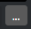
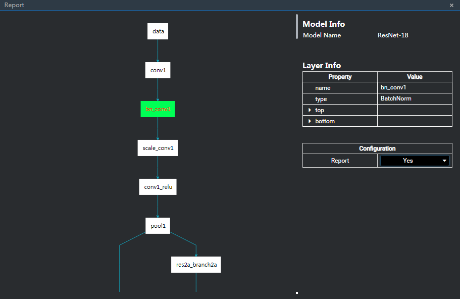
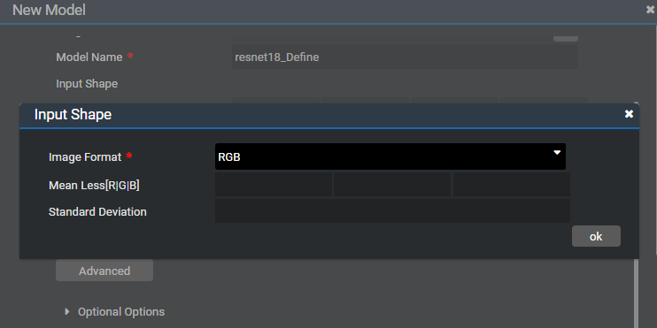
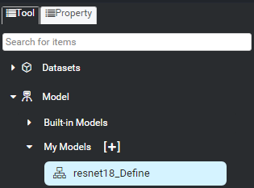

Adding a Custom Model Component
You can add a custom model component in either of the following ways:
- In the orchestration window of the .mind file, choose Tool > My Models.
- Right-click a project and choose Convert Model... from the shortcut menu, or choose Tools > Convert Model... on the GUI.
The following describes the two ways.
Adding a Custom Model Component in the New Model Dialog Box
Click
 on the right of My Models to add a custom model component, as shown in Figure 1.
on the right of My Models to add a custom model component, as shown in Figure 1.The New Model window is displayed, as shown in Figure 2.
Select Caffe, Tensorflow, or OfflineModel from the Model type drop-down list box.
- Caffe: The model file and weight file must be configured.
- Tensorflow: The model file must be configured.
- OfflineModel: At least one model path （device model path or emulator model path） must be configured.
Click  on the right of Model File to select a model file.
See Figure 3.
Figure 3 Selecting a model file

- The name of the model file is automatically filled in the Model Name text box. After selecting a model file, you can change the model name as required.
- The tool parses the model file and obtains the default Input Shape of the model. （A TensorFlow model or a model with a custom layer does not support parsing. In this case, you can enter the content in the Input Shape text box. The format of a Caffe model is input_name:n,c,h,w. The format of a TensorFlow model is input_name:n,h,w,c. Multiple inputs need to be separated by semicolons (;）. For example: data1:1,3,224,224;data2:1,3,32,32
After you select a model file, the
 button is displayed on the right of Model File. Click this button. The original network structure of the model is displayed. You can set the layer which needs to be reported. （After conversion, the output of the selected layer is directly used as the output of the offline model.） If Report is set to Yes for a layer, the layer turns green. See Figure 4.
button is displayed on the right of Model File. Click this button. The original network structure of the model is displayed. You can set the layer which needs to be reported. （After conversion, the output of the selected layer is directly used as the output of the offline model.） If Report is set to Yes for a layer, the layer turns green. See Figure 4.Figure 4 Model network structure
 NOTE:
NOTE:
Currently, the button is displayed on the right of Model File only after you select a Caffe model file. This button is not displayed when a TensorFlow model file is selected.
button is displayed on the right of Model File only after you select a Caffe model file. This button is not displayed when a TensorFlow model file is selected. Set Quantization to On. Then you can perform quantization settings.
You can select IMAGE or BINARY from the Input Type drop-down list box.
- If you select IMAGE, image folders are available to Images File.
- If you select BINARY, bin files are available to Images File.
You are advised to select a maximum of 50 images for quantization. Otherwise, the process may time out due to too long quantization time （3 hours）. See Figure 5.
Click Advanced to set Image Format, Mean Less[R][G][B], and Standard Deviation. Then, click ok to make the settings take effect, as shown in Figure 6.
Figure 6 Advanced quantization configuration
If the quantization switch is turned on, you can view the configuration information about quantization parameters in the convertModel.log file of the corresponding project after the model conversion is complete. For details about the quantization configuration, see Quantization Configuration.
Click Optional Options. More options can be configured, as shown in Figure 7.
Table 1 lists the configuration parameters.
Table 1 Parameter description of the Optional Options area
If there are custom development operators for the imported model, you need to import them to the path.
Advanced image preprocessing (AIPP) configuration. This parameter is enabled by default. You can disable it if you do not need to set it. If this parameter is enabled, you can view the parameter settings in the convertModel.log file in the corresponding project directory after model conversion is complete.
Input image size. The default value is obtained based on the 128-pixel aligned width and 16-pixel aligned height of the input layer in the model file.
Color gamut conversion. This function is enabled by default.
This function needs to be enabled when the format of the input image is different from that of the model processing file.
Format of the model processing image. The default format is BGR888_U8.
Options: YUV444SP_U8, YVU444SP_U8, RGB888_U8, BGR888_U8, and GRAY
An option can be selected after color gamut conversion is enabled.
Start position of image cropping. This parameter is disabled by default. After enabling it, you can set the start position.
Mean reduction values. The mean reduction function is enabled by default.
The default values of the three channels are 104, 117, and 123, respectively.
Multiplication coefficient (standard deviation or reciprocal of (Max – Min)). This parameter is disabled by default.
Whether to enable encryption. If the switch is turned on, encryption is performed. Otherwise, encryption is not performed.
For details, see Encrypting and Decrypting a Custom Model.
NOTE:
When a model is converted in the scenario where Input Image Preprocess is enabled during model conversion, Input Image Format is set to XRGB8888_U8 or RGB888_U8, and Image Format Conversion is disabled, the image imported to the data set should be in NHWC format.After the configuration is complete, click ok to create a model. However, there is a 3-hour running time limit on this operation. If the model conversion cannot be completed within 3 hours, the conversion process ends.
After a model is successfully created, a dialog box indicating conversion success is displayed, as shown in Figure 8. You can also view the model path （the path of the model running on the device is displayed by default） and file size.
Figure 8 Successful model conversion

If the operation fails and the Error Report dialog box is displayed, see 4 "Offline Model Conversion" in the Mind Studio Quick Start.
After a model is added successfully, a custom model component is displayed under My Models. You can drag it for subsequent orchestration, as shown in Figure 9.
Figure 9 Custom model component
Click the Model Zoo tab on the right. You can view the custom model component in model-zoo > my-model, as shown in Figure 10.
Figure 10 Model file generated after conversion
 NOTE:
NOTE:
resnet18.om is the model file generated after conversion.


Adding a Custom Model Component by Model Conversion
- On the Projects Explorer tab page, select the project whose model needs to be converted.
Right-click the project and choose Convert Model... from the shortcut menu, or choose Tools > Convert Model... on the GUI.
The Convert Model dialog box is displayed, as shown in Figure 11.
Parameters on the Convert Model window are the same as those on the New Model window. For details, see Adding a Custom Model Component in the New Model Dialog Box.
- After the configuration is complete, click ok to convert the model.
After a model is successfully converted, a dialog box indicating conversion success is displayed, as shown in Figure 12. You can also view the model path （the path of the model running on the device is displayed by default） and file size.
Figure 12 Successful conversion dialog box

If the operation fails and the Error Report dialog box is displayed, see 4 "Offline Model Conversion" in the Mind Studio Quick Start.
After the model is converted successfully, you can view the custom model component in model-zoo > offline-model, as shown in Figure 13.
You can add a converted model component to the custom model component folder for subsequent drag-and-drop orchestration.
Choose tool > My Models and click +. The dialog box for creating a component is displayed. Table 2 describes the parameters in the dialog box. Figure 14 shows the New Model dialog box.
Figure 14 Adding a custom model component

Table 2 Parameters in the New Model dialog box
NOTE:
An encrypted model cannot be added.Click OK.
Click select to add the converted offline model to the custom model component group.